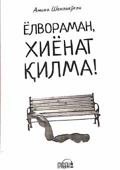

YXOna va farzand ayriligi haqida islomiy ruhda yozilgan ta'sirli roman.
Bu roman Amina Shenliko'g'lu tomonidan yozilgan bo'lib, oilaviy ajralish, ona va farzand o'rtasidagi muhabbat hamda xiyonat mavzularini qamrab oladi. Asar Chanakkale qamoqxonasida boshlangan va Istanbulda yakunlangan. Islomiy ruh va insoniy his-tuyg'ular asosida qurilgan bu roman o'quvchini chuqur o'ylashga undaydi.